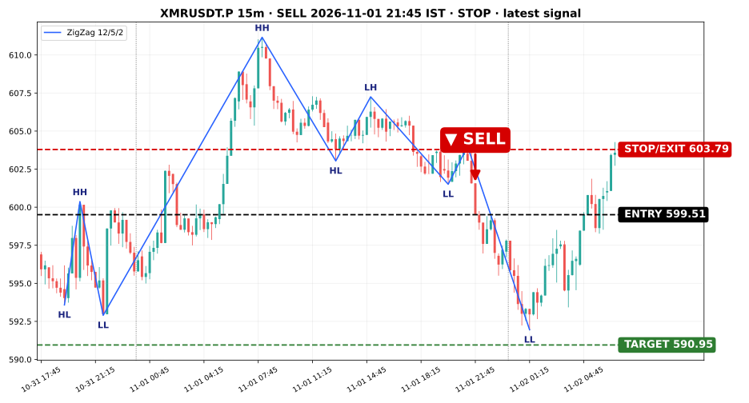
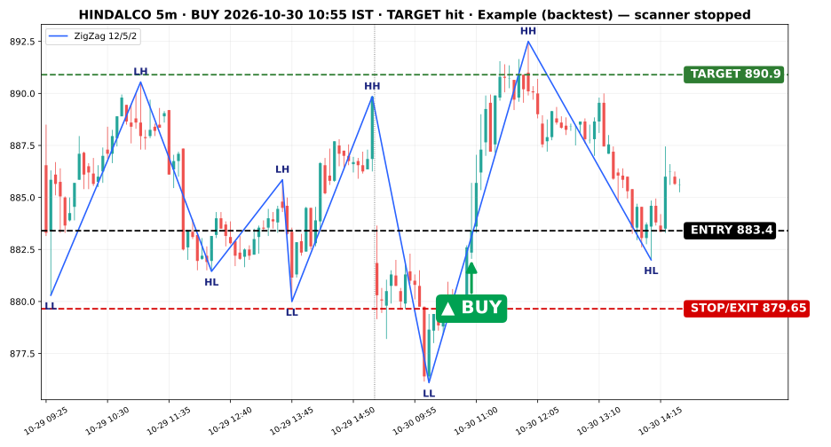

⛔ OFFLINE since 2 Nov 2026, 16:50 IST: After 14 (crypto and NSE) is switched off: no scans, no alerts, no updates. Only Anchor Break is live (Anchor Break →). Everything below is old data.
Scanner status
Crypto …
Last run…
UniverseCrypto · 33 coins (BingX)
Timeframe15m
Entry windowAny time 05:30 → 05:30 IST (no cutoff)
Close-allNone
VariantsFilterstop ≥1%, 1:2 ● Active setup
No Filter1:2
Open trades…
Today (IST)…
Last signal…

NSE · Nifty 100 STOPPED
StatusRoutine paused · no live data
UniverseNifty 100 (NSE)
Timeframe5m
Entry window09:30–14:00 IST
Close-all15:00 IST
VariantsFilterstop ≥1%, 1:2 ● Active setup
No Filter1:2
Open tradesFilter0 No Filter0
Last signal— none (scanner paused)

Example (backtest) — scanner stopped · HINDALCO 5m, 30 Oct 2026 BUY, target hit.
Open trades
| Variant | Symbol | Side | Signal IST | Entry | Stop | Target | Last | Current R |
|---|
| Loading… |
Best setup
FilterCrypto · after 2 PM · 1% stop · 1:2 — 42 trades, 50% win, +41.5% (backtest 1 Sep–2 Nov 2026).
Last backtests
| Market | Range | Variant | Trades | Win 1:2 | Total |
|---|
| Crypto 15m | 1 Sep–2 Nov 2026 | No Filter | 122 | 40.2% | +32.9% |
| Crypto 15m | 1 Sep–2 Nov 2026 | Filter | 42 | 50.0% | +41.5% |
| Nifty 100 5m | 26–30 Oct 2026 | No Filter | 54 | 29.6% | −1.30R gross |
| Nifty 100 5m | 26–30 Oct 2026 | Filter | 2 | 0% (2 closed 15:00) | +1.30R gross |
Nifty: small sample, no edge. Signals only, no trades placed.
Live signals · Crypto · 15m
Live scan of 33 BingX perps on 15m (TradingView data), entries any time 05:30 → 05:30 IST (no cutoff), target 1:2. Signals only, no trades.
Loading…
← Home · Anchor Break
Rules
Anchor Break — full strategy (updated 2 Nov 2026, 16:35 IST)
- Pivots: ZigZag++ (12/5/2) on TradingView data. ZigZag pivots are final; raw candle swings that ZigZag did not mark are ignored.
- Anchor 1 (A1): SELL = the last ZigZag Higher High (HH) of the previous day; BUY = the last ZigZag Lower Low (LL) of the previous day.
- Anchor 2 (A2): the first complete candle of the current day fully beyond A1 (SELL: low above A1; BUY: high below A1). A2 only confirms the pattern; it is not the entry.
- Days: A1 on the last day, A2 on the current day. Running only while A2 is today. Day starts: crypto 05:30 IST, NSE 09:15 IST (session 09:15–15:30).
- Between A1 and A2 (ZigZag pivots only): SELL — a ZigZag lower high (LH) rejects the setup entirely (never shown in Running or any list); raw unmarked lower highs are ignored; lower lows (LL) and higher lows (HL) are allowed. BUY mirror — a ZigZag higher high (HH) rejects entirely; HL and LH allowed.
- Running = pattern confirmed (A1 + A2), entry not yet triggered. Activated = entry triggered (open trade).
- Entry: the first candle close through A1 at/after A2 (SELL: close below A1; BUY: close above A1).
- Entry windows: NSE 09:30–14:00 IST. Crypto: any time from the 05:30 IST day start, no cutoff (no 11:00 or evening close).
- Stop: previous candle's high (SELL) / low (BUY). Target 1:2. A candle touching both stop and target counts as stop.
- Closes: NSE open trades force-close at 15:00 IST. Crypto: a setup still Running (not filled) at the next 05:30 IST day start is force-closed and does not carry over; filled crypto trades run to stop / target.
- Level expiry: crypto chart levels only on the trade's own 05:30 IST session day; NSE no expiry.
- Variants: No Filter and Filter (stop ≥ 1% of entry). Live signals carry no cost.
- Alerts: phone notification (ntfy, with email backup) when a setup newly becomes Running and when it becomes Activated.
Anchor Break BUY
- Anchor 1 is the previous day's last ZigZag++ (12/5/2) Lower Low (LL).
- Any pivot except a Lower High (LH) or Higher High (HH) may form after it that day; an LH or HH confirmed that day or anywhere before Anchor 2 rejects the anchor.
- Anchor 2: a complete candle on the next day sits entirely below Anchor 1 (high and low below it). Required first.
- Entry is the first 15m close above Anchor 1 after that candle.
- Stop is the previous candle's low.
SELL
- Mirror of BUY using Higher Highs (HH): Anchor 1 is the previous day's last HH; a lower low after it is fine, a higher low (HL) or lower high (LH) confirmed that day or anywhere before Anchor 2 rejects it; Anchor 2: a higher high that holds — a complete candle on the next day entirely above Anchor 1 (high and low above it). Only after that does a break below Anchor 1 count; a break alone is not a sell.
- Entry is the first 15m close below Anchor 1 after that candle.
- Stop is the previous candle's high.
Day & time filter
- The day runs 05:30–05:30 IST.
- Entry candle any time in the 05:30–05:30 IST crypto day; unfilled setups are force-closed at the next 05:30.
Variants
1 · No filter
Entries after 14:00 IST.
| Target | Trades | Win | Total |
|---|
| 1:1 | 122 | 52.5% | +10.0% |
| 1:2 | 122 | 40.2% | +32.9% |
2 · 1% stop filter, 1:2 targetActive setup
Best setup. Entries after 14:00 IST, stop at least 1% from entry.
| Target | Trades | Win | Total |
|---|
| 1:1 | 42 | 66.7% | +23.0% |
| 1:2 | 42 | 50.0% | +41.5% |
Totals are the sum of % per trade at 1x after 0.15% cost. The sample is small and the time filter was found after seeing results, so treat it as unproven.